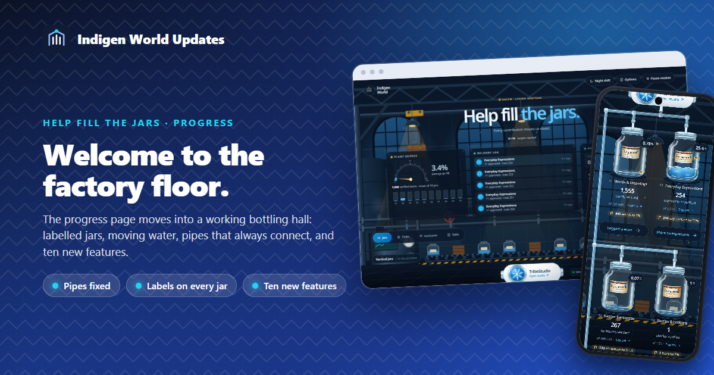
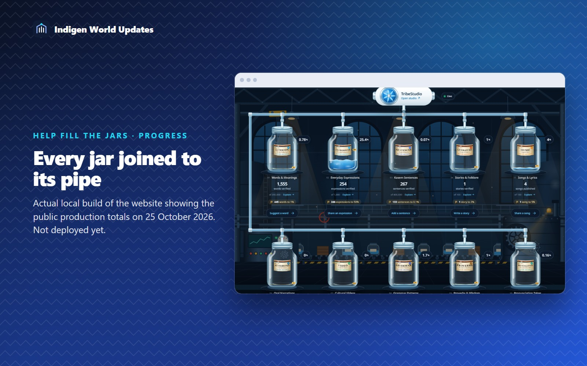
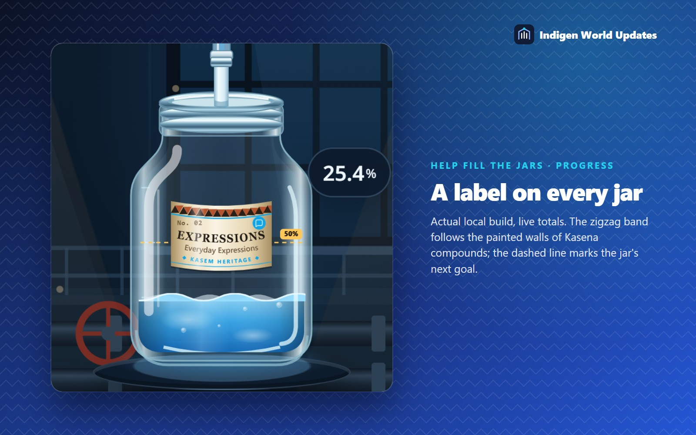
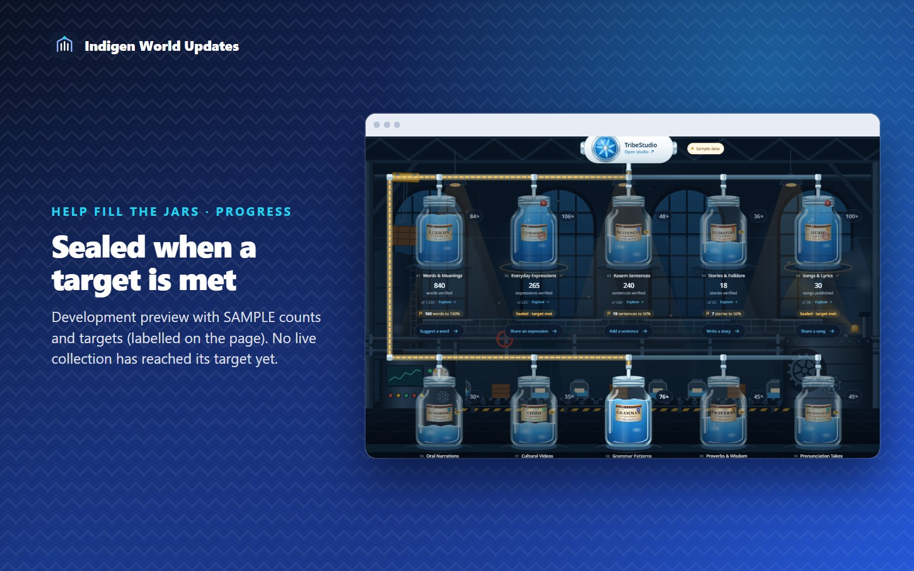
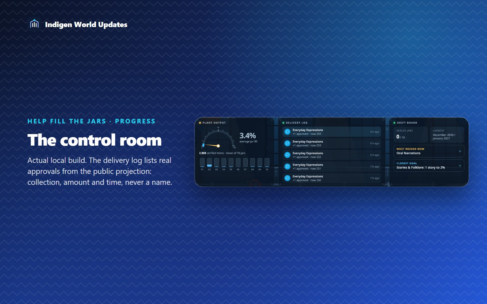
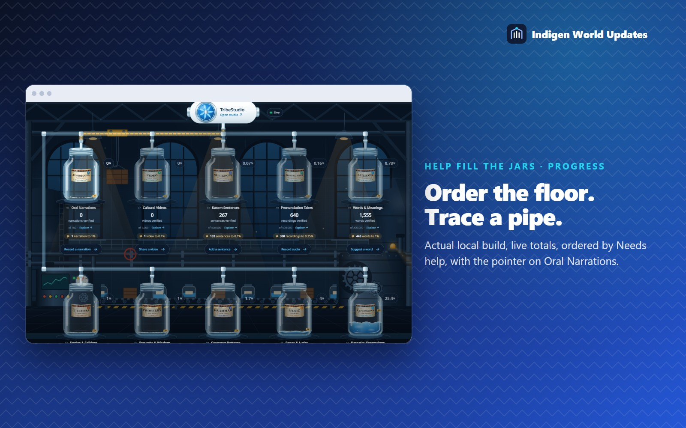
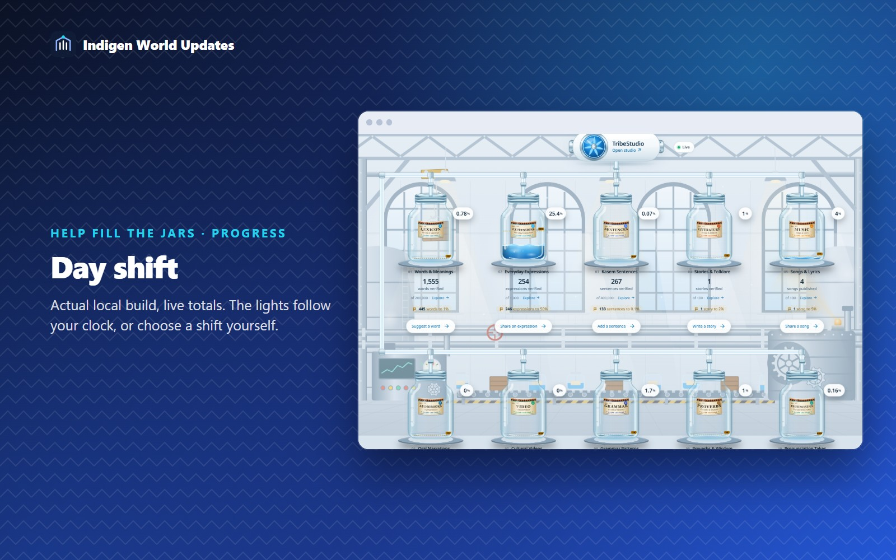
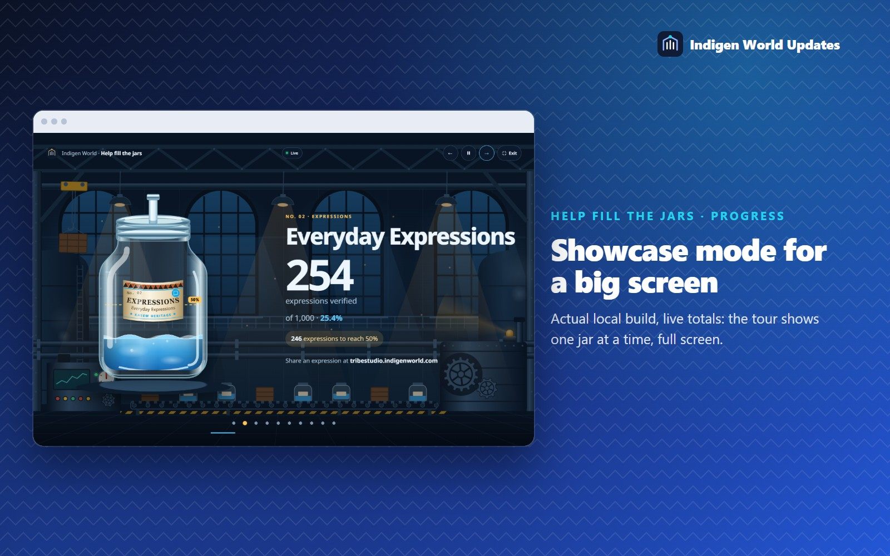
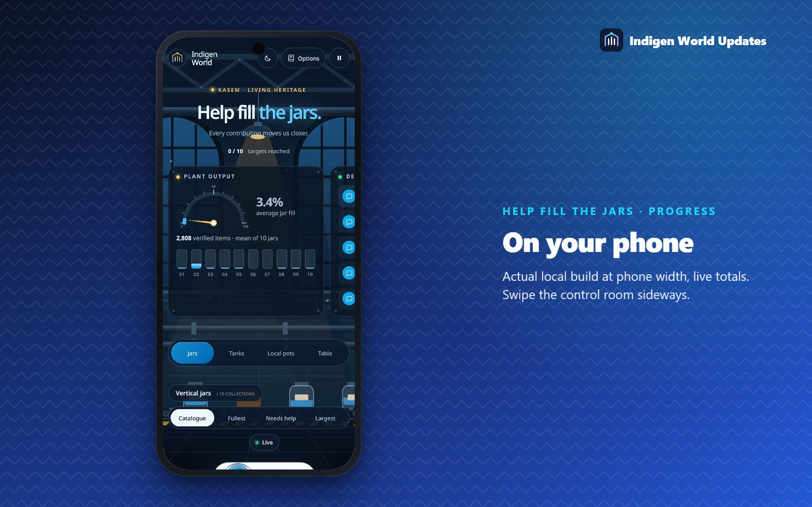

The page where you watch Kasem collections grow, Help fill the jars, has moved onto a factory floor. The jars stand in a working bottling hall, each one has its own printed label, the water in them moves, and ten new features show where your next contribution counts most. This update also fixes jars that could appear late and pipes that did not connect.
Live since 25 October 2026. Open indigenworld.com/progress on a computer or a phone. The counts and counting rules are unchanged.
In mid-October the website gained a gentle effect on many pages: cards rise into place as you scroll. That effect also caught the jars. A jar below the first screen started invisible and slightly lower, then slid up when you reached it, while the glass pipes had already been drawn to where each jar was at the start. The result was pipes that stopped short of some jars or ran past them, mostly on phones.
The jars are no longer treated as scrolling cards, the progress page now opts out of that effect, and the pipes measure themselves again whenever anything on the page settles. An automated browser check now fails if a jar is ever moved this way again, and it confirms that every pipe meets its jar at screen widths from 320 to 1440 pixels.

Behind the jars there is now a bottling hall: tall arched windows, steel roof trusses, a crane carrying a crate along its rail, a conveyor belt of jars and crates, turning gears, a warning beacon, steam from the vents and lamps that swing a little on their cables, with dust drifting through their light. As you scroll, the far wall moves least and the hanging lamps move most, which gives the page real depth.
The factory is scenery. Its crane and conveyor keep moving whether or not anything arrives. Only three things report real activity: the pipes (a pulse travels to a jar when a contribution is approved), the numbers, and the new delivery log.
Motion is yours to control. Pause motion at the top of the page stops everything, and if your device asks for reduced motion, the page starts still.
The liquid in each jar now has a real surface: two gentle waves slide across it in opposite directions, with bubbles rising underneath. The waves are honest. Their average height is exactly the counted level, and a jar with only a sliver of liquid gets a tiny ripple, so a small collection never looks fuller than it is.
The moving water is drawn in a way that phones handle easily, so the whole factory stays smooth while it runs.
Each jar now carries a printed paper label:
The label sits high on the jar and is narrower than the glass, so the liquid stays visible below it and on both sides.

When a collection reaches its launch target, its jar is sealed: a red wax seal appears on the lid, the label gets a Sealed · Target met stamp and the jar's base glows gold. No collection has reached its target yet. The picture below uses the page's sample preview, which is clearly marked as sample data.

A gauge at the top shows the average fill of the ten jars, with a strip of ten small level indicators beside it, one per jar. Each collection counts equally, whatever its target, and words are never added to videos or recordings to make one bigger number. Next to it you see the total number of verified items.
The latest approvals as they reach the page: which collection, how many, its new total and how long ago. The log comes from the same public record as the totals, so it shows a collection, an amount and a time, never a contributor's name.
How many jars are sealed, the launch window, the collection that most needs help right now, and the collection closest to its next goal. Press either of the last two to jump straight to that jar.

Every jar shows its next milestone in plain numbers, such as 445 words to 1% or 246 expressions to 50%, and a dashed gold line on the glass marks where that milestone sits. For large targets the goals start at a tenth of a percent, so every jar always has one within reach.
Arrange the jars in catalogue order, fullest first, Needs help first or largest first. The jars glide to their new places and the pipes reconnect. Jars whose count or target cannot be read always go last, so they never look empty or full by mistake.
Point at a jar, or move to it with the keyboard, and its pipe from TribeStudio lights up in gold while the others dim.

The factory has two lighting schemes. By day, daylight comes through the windows. By night, the hall is lit by amber lamps and the water glows. The lights follow your device's clock (day from 06:00 to 18:00), or you can choose a shift with the button at the top. Your choice is remembered on that device.

For a screen at a community meeting, a school or an event: Showcase opens a full-screen tour that shows one jar at a time, large, with its count, its next goal and where to contribute. It moves on every nine seconds, and you can step through with the arrow keys. The numbers stay live while it runs. Press Exit or Escape to leave.

Every jar has its own link. In a jar's details choose Copy link to this jar; whoever opens the link lands on that jar, highlighted, with its pipe lit. This works well in a WhatsApp group: "Help us fill this one."
For those who like it, Options → Play factory sound adds a quiet machine-room hum with a slow press rhythm. It is made in your browser, never starts on its own and stops when you leave the page.
On a phone the control room becomes a row of panels you swipe sideways, the jars stand two to a row with every pipe connected, and the labels, waves and goal lines are all there.

The counting rules are exactly as before. A jar fills to its counted total divided by its target, and only approved, usable contributions count (published songs for Songs & Lyrics). The table view, the pottery view and the tanks are all still there, and Alt + T still opens the data table.
See it now at indigenworld.com/progress, then press Showcase or pick the jar you want to help fill.